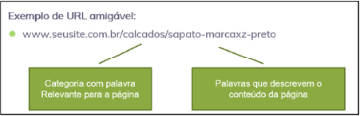

Quando se fala em programação para a internet, é fundamental que seu site seja desenvolvido conforme os padrões do W3C (World Wide Web Consortium). Os padrões W3C descrevem as melhores práticas de desenvolvimento web, que variam desde linguagens de programação recomendadas, como HTML (hypertext markup language ou linguagem de marcação de hipertexto) e CSS (cascading style sheets ou folhas de estilo em cascata), até princípios geralmente aceitos de arquitetura e serviços da web. As tecnologias listadas como padrões são, no que diz respeito ao W3C, as soluções mais adequadas atualmente disponíveis para uso em massa, incluindo a acessibilidade.
Atualmente, contudo, não basta que o site seja apenas desenvolvido corretamente seguindo os padrões W3C; é preciso que seu código também esteja otimizado para os buscadores da web, pois é assim que um site, seja ele corporativo, seja um blog ou até mesmo um portal de notícias, é encontrado pela maioria dos usuários. Hoje em dia, existem inúmeras ferramentas de busca, como Yahoo e Bing, porém a principal utilizada no Brasil é o Google.
Neste conhecimento, você aprenderá as principais técnicas e ferramentas de SEO disponíveis, para que seu site esteja otimizado e adequado para ser listado nos principais buscadores da web.
No Brasil, o SEO é popularmente conhecido como uma estratégia de otimização para buscadores, no entanto é uma sigla que vem do inglês, search engine optimization. Basicamente, consiste em um conjunto de técnicas e estratégias de otimização aplicadas em um site para que ele apareça na listagem orgânica das ferramentas de busca.
Clique ou toque no botão de play para ouvir o áudio ou no botão de transcrição para ler o conteúdo.
Já é perceptível que, para que qualquer site ou sistema desenvolvido para a internet fique nas primeiras posições de um buscador, é preciso utilizar uma estratégia de SEO. Então SEO consiste apenas em otimização de códigos?
A resposta é não! Basicamente, para que um site apareça de forma orgânica nas primeiras posições de um buscador, depende de três fatores: conteúdo, reputação e tecnologia.
Clique ou toque para visualizar o conteúdo.
Os buscadores valorizam conteúdo relevante, útil e atualizado. Publicar conteúdo de qualidade regularmente melhora a classificação do site nos resultados de pesquisa.
A escolha de palavras-chave relevantes para o conteúdo da página é crucial. Essas palavras-chave devem ser incorporadas naturalmente a conteúdo, títulos, meta tags e URLs (uniform resource locator ou localizador uniforme de recursos).
O fator reputação tem a ver com a quantidade e a qualidade dos links que apontam para a sua página. Então a construção de links de qualidade, tanto internos quanto externos, é uma parte fundamental do SEO. Links de outros sites confiáveis podem aumentar a autoridade da sua página aos olhos das ferramentas de busca.
Já a parte de tecnologia envolve diversos fatores, como:
Neste curso, será abordada de forma mais específica a parte de tecnologia, que é onde a otimização ocorre em maior parte no código e na estrutura do site.
É na etapa de tecnologia que está a responsabilidade do desenvolvedor, ou seja, cabe a ele programar o site ou o sistema contendo códigos otimizados e estrutura amigável às ferramentas de busca.
A parte de conteúdo e reputação está mais relacionada aos setores de marketing e assessoria de imprensa, pois cabe a eles o estudo para entender quais são os assuntos e temas de maior interesse para o público-alvo, além de desenvolver ações para que esses temas se tornem notícia na grande mídia e para que outros sites apontem links para o conteúdo.
É importante frisar que o Google e demais ferramentas de busca, periodicamente, atualizam seus algoritmos. Estar ciente dessas atualizações e ajustar as estratégias de SEO é importante para manter a eficácia. As práticas de SEO estão sempre evoluindo, e é importante estar atualizado com as tendências e diretrizes dos buscadores para manter uma presença on-line sólida e bem classificada.
Neste tópico, você aprenderá diversas técnicas para tornar seu site otimizado e com estrutura amigável para as ferramentas de busca. Lembre-se de que seu código, indispensavelmente, deve seguir os padrões de desenvolvimento determinados pelo W3C.
As otimizações abordadas aqui complementam, ou seja, estendem a programação web para além da correta codificação, pois o desenvolvimento, agora, também é pensando no usuário final e na encontrabilidade do site, principalmente em sites com foco comercial.
Um dos principais fatores de otimização é a correta estrutura das tags HTML. Esse tema é bastante abordado nos tópicos de desenvolvimento de interface para a web (front-end). E quando você aprendeu HTML5, intrinsecamente esse conteúdo já estava lá.
Porém, é um tema que o desenvolvedor que não pensa em SEO esquece facilmente, pois cai no comodismo e nas facilidades das ferramentas utilizadas no dia a dia. Quanto tempo faz que você não entra no site da W3School para consultar a lista de tags disponíveis e atuais do HTML? Pois é, muito provavelmente você já colocou algum conteúdo em uma tag errada, pelo simples fato de não saber que existia uma tag específica para aquele conteúdo.
Utilizar corretamente a estrutura de tags HTML é, basicamente, usar a tag mais apropriada para cada tipo de conteúdo. Por exemplo, para representar títulos em uma página, estão disponíveis as tags de h1 até h6, que simbolizam títulos e subtítulos, ou seja, níveis de títulos diferentes.
Pense em um livro grande, separado por capítulos e subcapítulos. A tag h1 só pode ser utilizada como título principal, e raramente se vê um livro no qual existam dois títulos na mesma página. Geralmente quando um capítulo acaba, mesmo que haja espaço na página, o texto com o novo título começa em uma nova página.
Objetivando isso para o HTML, a tag h1 só deve ser usada uma vez por página ou seção. Veja um exemplo de correta utilização da tag h1:
<!-- Tag H1 utilizada como título da página -->
<h1/>Conheça nossos móveis planejados</h1>
Agora, veja um exemplo da tag h1 sendo utilizada como título de uma seção do site:
<section>
<header>
<h1>Cozinhas Planejadas</h1>
</header>
</section>
Cada tag tem a própria aplicação. Para otimizar seu código para SEO, você deve seguir firmemente o objetivo de cada tag e nunca utilizar tags sem valor semântico para colocar textos ou conteúdo. Um exemplo disso é utilização tag div. É comum um site ter dezenas de tags div, porém essa tag não tem valor semântico e nunca deve ser utilizada para representar um texto. Para aplicar blocos de texto, deve-se usar a tag p.
Veja, agora, um exemplo correto e um incorreto de se utilizar a tag div junto ao conteúdo textual:
<div> Conheça nossos móveis planejados </div>
<div> <p>Conheça nossos móveis planejados</p> </div>
No primeiro exemplo, perceba que o texto está direto na tag div. É errado porque, quando o buscador rastreia o seu código, o que está na tag div é ignorado, pois não se entende o que aquele conteúdo deveria representar. Já no segundo exemplo, perceba que, após a tag div, há uma tag p em volta do conteúdo, informando para o buscador que aquele texto é um parágrafo.
Então, neste momento, é essencial você entrar no site da W3Schools e encontrar a lista oficial de tags disponíveis no HTML. Em cada tag há a explicação oficial de para que serve cada uma.
Outro erro muito comum de se cometer no dia a dia é confundir tag com estilo. Depois do HTML5 e do CSS3, esses papéis foram totalmente separados, ou seja, HTML cuida somente da semântica – explicar o que é o que em termos de conteúdo – e CSS cuida exclusivamente do estilo – formatação e design da página.
É comum desenvolvedores cometerem esse erro, por exemplo, com a tag strong. A utilização dessa tag não é para deixar os textos em negrito (bold); ela serve para dar ênfase em algum trecho do texto. Ela também não deve ser utilizada como tag principal. O ideal é sempre estar dentro de uma tag p.
Então você pode pensar:
“Mas sempre que uso a tag strong o texto fica em negrito. Como assim? Ela serve para isso?”
Pois é, isso ocorre porque toda tag tem um estilo-padrão, predeterminado pelos navegadores. Mas para deixar qualquer trecho em negrito, utiliza-se o estilo font-weight do CSS. É possível aplicá-lo em qualquer tag e até mesmo tirar o bold da tag strong com esse estilo.Falando um pouco, agora, sobre a utilização de links, quando se utiliza texto dentro dos links, o buscador já tem uma ideia sobre o que trata o assunto. Isso quer dizer que um link no título de uma notícia tende a ser mais efetivo que um genérico “saiba mais”. Veja um exemplo:
<!-- Aqui o buscador não sabe qual o tema / assunto da próxima URL -->
<a href="/sua-url-destino">
Saiba mais
</a>
Já escrevendo como no próximo exemplo, seu código fica mais otimizado em termos de SEO, pois informa o assunto no texto do link:
<a href=“/sua-url-destino”>
Veja nossas cozinhas planejadas
</a>
Para finalizar este tópico, veja a lista de algumas tags que são pouco utilizadas e reforçam a otimização para os buscadores.
Deve ser utilizada para mostrar informações de contato como e-mail, endereço físico, número de telefone, mídias sociais etc.
Define o título de um trabalho criativo (por exemplo, um livro, um poema, uma música, um filme, uma pintura, uma escultura etc.).
Deve ser usada para definir ilustrações, fotos e imagens que representem o assunto da página. Obviamente, para mostrar a imagem, dentro de figure é preciso incluir a tag img.
Representa a legenda da figura e deve sempre ser utilizada dentro da tag figure.
Serve para representar qualquer conjunto de links.
Servem para representar o cabeçalho do site ou da seção, os setores do site e o seu rodapé.
Servem para representar o topo, o corpo e o rodapé de uma tabela.
Serve para representar janelas modal. Caixas de aviso.
Para finalizar, reforça-se que é imprescindível visitar regularmente a lista de tags HTML no site da W3Schools para relembrar e manter a correta semântica do seu site, pois isso, além de ser determinante para SEO, ainda ajuda na correta funcionalidade dos navegadores.
As tags title e meta description são tão importantes para SEO que merecem um tópico exclusivo. As informações essenciais do seu site, que aparecem em qualquer buscador, são controladas por essas duas tags.
Bem, a tag title você já deve conhecer. É aquele tag que fica dentro do head no HTML e mostra um texto na aba do navegador. Porém, é com essa tag também que se determina o que aparecerá no título das buscas nas quais seu site será listado.
Veja um exemplo de aplicação no código:
<head>
<title>O que é tratamento de canal? - Colgate</title>
</head>
Agora, veja um exemplo de resultado na busca:
Visualizando as tags title e meta description na busca
Fonte: Senac EAD (2024)
A imagem mostra a simulação de uma pesquisa no buscador Google. Contém uma seta apontando onde aparece o texto da tag title. Outra seta aponta onde vem a descrição breve dos sites listados, com a utilização da tag meta description.
Já a meta description é a utilização da tag meta, que serve para passar informações adicionais e importantes ao documento HTML, com o atributo name de valor description.
Conforme visto na figura, é por meio dela que se controla o texto que aparecerá na listagem do buscador. Veja um exemplo de utilização:
<head>
<title>O que é tratamento de canal? - Colgate</title>
<meta name="description" content="Aqui vai a descrição breve do meu site. Este texto é mostrado no buscador quando meu site é listado.">
</head>
Um fator importante sobre a utilização dessas duas tags é a limitação de texto delas. Para mantê-las otimizadas e de acordo com sua estratégia de SEO, devem ser respeitados os seguintes limites:
Há inúmeras ferramentas que simulam como ficariam seus textos dentro dessas tags aplicados à listagem do buscador. Recomenda-se a utilização do site SEOmofo, que é uma ferramenta gratuita que simula as páginas de resultados do mecanismo de pesquisa do Google. Nela, você utiliza um formulário para inserir o título, a meta descrição e a URL de sua página da web. Essa ferramenta gerará uma lista virtual de resultados de pesquisa com base em suas informações.
Por fim, é importante reforçar que é obrigatória a utilização das tags title e meta description para qualquer estratégia de otimização nos mecanismos de busca.
Para que um buscador encontre seu site, ele tem robôs programados para ficar constantemente procurando e indexando novas URLs. Basicamente, ele encontra um site e, dentro deste, encontra links, apontando para outras URLs, sejam elas internas, sejam externas. O robô entra nesses links e vai indexando e repetindo o processo infinitamente.
Esses “robôs”, ao encontrarem o seu site, não o veem como um humano veria; eles basicamente leem o seu código. Quando chegam a uma imagem, não interpretam o que ela representa, mas apenas leem o caminho na tag img e descobrem o nome dela.
Então, para otimizar as imagens pensando em SEO, você deve ter percebido que o nome da imagem tem relevância. Por isso, em vez de a imagem ter o nome “foto-01.png”, é mais prudente ter um nome que a represente. Por exemplo, a foto de uma árvore com laranjas poderia se chamar “laranjeira.png”.
Porém, a correta utilização do atributo alt, na tag img do HTML, é ainda mais importante que o nome da imagem. Isso porque o buscador, ao ler seu código, quando encontrar a imagem, lerá o que está escrito no atributo alt dela. Um exemplo de preenchimento desse atributo, para a laranjeira, seria “Árvore laranjeira, com folhas verdes e repleta de laranjas maduras”.
Por outro lado, o atributo alt também é fundamental quando o assunto é acessibilidade, pois existem leitores de tela utilizados principalmente por pessoas que têm alguma dificuldade na visão. Esses leitores de tela não identificam o que é a imagem nem o que ela representa, então leem o que estiver escrito no atributo alt.
De acordo com os padrões W3C, o atributo alt é obrigatório em toda tag img. Porém, agora você percebeu que, além de obrigatório, ele é essencial para a acessibilidade e para a sua estratégia de SEO.
<img src="imagens/laranjeira.jpg" alt="Árvore laranjeira, com folhas verdes e repleta de laranjas maduras.">
Em vídeo disponível no YouTube (How Search [...], 2012), Matt Cutts, na época chefe da equipe de spam da web do Google, declara que o Googlebot (robô de busca do Google) não vê as imagens diretamente, então ele se concentra nas informações fornecidas no atributo alt.
Em suma, nunca se esqueça do atributo alt nas imagens, pois é assim que o Google entende o que significa sua imagem e o utiliza também para indexá-la na busca de imagens.
Outro fator determinado em SEO é a criação e disponibilização do mapa do site ou sistema. Um mapa do site, também conhecido como sitemap, é uma representação visual ou textual da estrutura de um site. Ele lista todas as páginas e os conteúdos do site de forma hierárquica, proporcionando uma visão geral clara da organização do conteúdo. Existem dois tipos principais de mapas do site: para usuários e para ferramentas de busca.
O mapa do site criado para usuários é projetado para ajudar os visitantes humanos a navegar pelo site de maneira fácil e eficiente. Ele geralmente é apresentado como uma página da web que lista links para todas as principais seções e páginas do site. Isso pode ser particularmente útil em sites com uma grande quantidade de conteúdo, tornando a navegação mais intuitiva para os usuários.
Já o mapa do site para buscadores é uma versão especial destinada a ser lida pelos algoritmos das ferramentas de busca. Ele fornece informações estruturadas sobre a organização do site e a relação entre diferentes páginas. Esse tipo de mapa ajuda os motores de busca a indexar eficientemente todas as páginas do site, garantindo que o conteúdo seja rastreado e exibido nos resultados de pesquisa.
O formato mais comum para um mapa do site para motores de busca é o arquivo XML (extensible markup language), conhecido como sitemap XML. Esse arquivo contém uma lista de URLs do site, juntamente com metadados adicionais, como a última data de modificação e a frequência de atualização. É possível enviar esse mapa do site para o Google por meio de uma ferramenta chamada Google Search Console, que será abordada mais adiante neste curso.
Veja um exemplo de sitemap XML:
<?xml version="1.0" encoding="UTF-8"?>
<urlset xmlns="http://www.sitemaps.org/schemas/sitemap/0.9">
<url>
<loc>https://exemplo.com.br/pagina1</loc>
<lastmod>2024-04-04T23:53:25+00:00</lastmod>
<changefreq>monthly</changefreq>
<priority>0.8</priority>
</url>
<url>
<loc>https://exemplo.com.br/pagina2</loc>
<lastmod>2024-04-04T23:53:25+00:00</lastmod>
<changefreq>monthly</changefreq>
<priority>0.9</priority>
</url>
</urlset>
Nesse exemplo, <loc> representa a URL da página, <lastmod> indica a última modificação, <changefreq> especifica a frequência de alterações e <priority> indica a prioridade relativa da página.
Você pode criar todo o XML do mapa do seu site de forma manual, porém atualmente existem ferramentas que ajudam nesse processo. Basta uma breve pesquisa por “gerador de sitemap” para encontrar ferramentas gratuitas que geram esse mapa do site para você. No entanto, seu site precisa estar publicado na web, então basta informar a URL e a ferramenta gerará esse arquivo XML para você, disponibilizando-o para download.
Porém, todas as vezes que você acrescentar, modificar ou remover URLs do seu site, é preciso repetir esse processo.
Os mapas do site desempenham um papel importante tanto para a experiência do usuário quanto para o SEO, ajudando a garantir uma navegação eficiente e a indexação adequada nos motores de busca.
Para qualquer buscador, o conteúdo do seu site precisa ser exclusivo. Por exemplo, para o Google, você sempre perde “pontos” em SEO se forem encontrados dois ou mais sites, ou mais de uma URL, com o conteúdo idêntico. Dentro disso, há dois problemas a solucionar: URLs duplicadas e conteúdos duplicados.
As URLs duplicadas referem-se a múltiplas URLs que apontam para conteúdo idêntico ou muito semelhante em um site. Isso pode ocorrer por várias razões e é problemático para o SEO e até mesmo para a experiência do usuário.
Veja alguns cenários comuns de URLs duplicadas:
Se um site usa parâmetros de URL para filtrar ou classificar o conteúdo, diferentes combinações desses parâmetros podem levar a URLs que exibem o mesmo conteúdo. Por exemplo:
Se o site permite o acesso com ou sem “www” no início da URL, as duas versões podem ser acessadas, levando a URLs duplicadas. Por exemplo:
URLs que diferem apenas pela presença ou ausência de uma barra no final podem ser consideradas duplicadas. Por exemplo:
Se várias páginas do site contêm conteúdo substancialmente idêntico, isso pode resultar em conteúdos duplicados. Isso pode acontecer, por exemplo, em páginas de categorias ou tags que exibem o mesmo conjunto de artigos.
A presença de URLs ou conteúdos duplicados tem implicações negativas para o SEO, pois os motores de busca podem ter dificuldade em decidir qual versão da URL exibir nos resultados de pesquisa. Além disso, isso resulta em uma dispersão desnecessária de autoridade de página entre diferentes versões da mesma página.
Porém, há formas de resolver esses problemas e aumentar a “força” do seu SEO. Para resolver a questão de conteúdos duplicados, ou seja, quando há páginas com o mesmo conteúdo ou conteúdo muito similar, usa-se mais uma vez uma tag do HTML5. Neste caso, usa-se a tag link com o atributo rel canonical. Veja um exemplo de aplicação:
<link rel="canonical" href="camisetas.html">
Como exemplo prático de conteúdo duplicado, é possível citar um site e-commerce que vende, por exemplo, camisetas. Para cada cor de camiseta há uma URL diferente. Neste caso, o conteúdo das páginas será praticamente o mesmo, pois, afinal, o produto é o mesmo, só o que muda é a cor. Então, para que o buscador não compreenda cada página como conteúdo duplicado, usa-se o link canonical.
Na prática, todas as páginas devem avisar, por meio do link canonical, a qual conteúdo daquela página pertencem. Por exemplo: suponha que existam as páginas camiseta-azul.html, camiseta-vermelha.html, camiseta-verde.html e camiseta-preta.html. Deve-se escolher uma dessas páginas como principal, e todas devem conter o link canonical, dentro da tag head, para a página escolhida.
Suponha que você decidiu que a página principal será a da camiseta preta. Então, todas as demais páginas da mesma camiseta devem conter o link canonical para a camiseta preta. Exemplo:
<head>
<title>Camiseta Azul</title>
<link rel="canonical" href="camiseta-preta.html">
</head>
Quanto às URLs duplicadas, a principal solução é redirecionar a página com o valor 301, isso indica ao buscador que essa URL mudou permanentemente para a qual ele aponta.
Existem diversas formas de criar esse redirecionamento, no entanto o mais utilizado em servidores web Linux é via arquivo .htaccess. Esse arquivo é responsável por enviar algumas regras de configuração que impactarão a visualização do seu site.
Caso não exista um arquivo com esse nome na pasta onde fica localizado o seu site, basta criá-lo com qualquer editor de código ou até mesmo com o bloco de notas do Windows e nomeá-lo como .htaccess, após inserir dentro dele o seguinte código:
Options +FollowSymLinks
RewriteEngine on
RewriteCond %{HTTP_HOST} ^seusite.com.br [NC]
RewriteRule ^(.*)$ http://www.seusite.com.br/$1 [L,R=301]
Obviamente, você precisa atualizar a URL para a do site que está construindo. O código acima faz com que sempre que alguém entrar no site sem digitar o “www”, o servidor direcione-o para a página com o “www”.
SSL (secure sockets layer) como fator de ranqueamento: no dia 6 de agosto de 2014, o Google oficialmente anunciou que priorizaria, na indexação, os sites que tivessem a criptografia SSL, ou seja, que pudessem ser acessados de forma segura por meio do HTTPS.
Agora, veja um exemplo de resultado na busca:
SSL como fator de ranqueamento
Fonte: Freepik (c2010-2024)
Desenho de um cadeado e um escudo verde, simbolizando segurança. Ao lado está o desenho de uma barra de navegador escrito “https”, simbolizando que um site que é acessado via https é seguro.
Contudo, conforme descrito anteriormente, qualquer site que permita o acesso tanto com HTTP quanto com HTTPS, para o Google, também é conteúdo duplicado!
Para resolver isso, recorre-se novamente ao redirecionamento usando o arquivo .htaccess. O exemplo de código a seguir faz com que toda vez que alguém acesse o site utilizando o HTTP, seja redirecionado para a mesma URL, mas agora com o HTTPS.
RewriteEngine On
RewriteCond %{HTTP:X-Forwarded-Proto} !https
RewriteCond %{HTTPS} off
RewriteRule ^ https://%{HTTP_HOST}%{REQUEST_URI} [L,R=301]
Esse código deve ser inserido dentro do arquivo .htaccess do seu site.
As práticas de redirecionamento e de links canonical são essenciais para o SEO, pois ajudam a consolidar a autoridade do seu site e melhorar a indexação nas ferramentas de busca.
URLs amigáveis, também conhecidas como URLs legíveis por humanos, são URLs estruturadas de uma maneira compreensível e significativa para os usuários. Em contraste, URLs não amigáveis podem ser longas, cheias de caracteres especiais, ou conter códigos dinâmicos que não fazem sentido para quem os lê.
Veja estes exemplos comparativos:
Implementar URLs amigáveis no seu site é extremamente importante para as estratégias de SEO, em razão de fatores como:
Clique ou toque para visualizar o conteúdo.
URLs amigáveis melhoram a legibilidade e usabilidade para os usuários. Uma URL clara e descritiva fornece aos visitantes e motores de busca informações sobre o conteúdo da página antes mesmo de clicarem no link.
Incluir palavras-chave relevantes na URL pode contribuir para a otimização de mecanismos de busca. Os motores de busca consideram a presença de palavras-chave na URL ao determinar a relevância de uma página para determinadas consultas de pesquisa.
URLs amigáveis são mais fáceis de lembrar e compartilhar. Isso é particularmente importante em ambientes de mídia social, nos quais URLs concisas e compreensíveis têm mais chances de serem clicadas e compartilhadas.
Em alguns casos, os motores de busca exibem partes da URL nas páginas de resultados de pesquisa. Uma URL amigável pode atrair mais cliques, pois os usuários podem ter uma ideia do conteúdo antes mesmo de clicarem no link.
Suponha que você tenha uma loja on-line que vende laptops e queira otimizar uma página para os laptops da marca “XYZ”. Uma URL amigável seria algo como:
https://www.exemplo.com/produtos/laptops/xyz
Isso é mais informativo para os motores de busca e usuários do que uma URL não amigável cheia de parâmetros e números.
Na hora de criar URLs amigáveis sempre use palavras-chave relevantes para o tema da empresa, mantenha as URLs curtas e descritivas, evite o uso de caracteres especiais, não utilize espaços em branco nem underlines (_) para separar as palavras e use sempre o hífen (-) como separador de palavras da URL.
URL amigável
Fonte: Senac EAD (2024)
A imagem mostra o exemplo de uma URL com setas informando que as palavras da URL devem ser separadas por hífen. Exemplo: sapato-preto.
Porém, tão importante quanto mostrar para o buscador tudo o que você quer indexar é avisar ao buscador aquelas páginas ou os diretórios que você não quer que apareçam na busca, como arquivos com funções ou até mesmo áreas administrativas que tenham acesso restrito.
Para isso, usa-se um arquivo chamado robots.txt em seu servidor, no diretório onde fica hospedado o seu site. Esse arquivo indica para o buscador, principalmente, quais URLs ele não deve indexar.
Veja um exemplo:
User-agent: *
Disallow: /administrator/
Disallow: /bin/
As linhas que contêm a palavra disallow seguida da URL ou do nome do diretório estão informando ao buscador que ele não deve listá-las, ou seja, essas páginas não aparecerão na busca do Google.
É importante reforçar que uma estratégia de SEO eficaz envolve uma combinação de vários elementos, incluindo conteúdo de qualidade, otimização de palavras-chave, experiência do usuário e outros fatores técnicos mostrados neste curso.
De acordo com o Google, os dados estruturados são um formato padronizado, enviados via tags ou códigos JavaScript, para fornecer informações sobre uma página e classificar o conteúdo dela. Por exemplo, em uma página de curso, o nome do curso, a duração, o preço e assim por diante.
Adicionar dados estruturados pode ativar resultados de pesquisa mais interessantes para os usuários, chamados de pesquisas aprimoradas, e incentivá-los a interagir mais com seu site.
De acordo com a Central da Pesquisa Google, que é um site que documenta e orienta sobre como manter um site otimizado para as ferramentas de busca, há diversos tipos de dados que podem ser especificados, como artigos, receitas, cursos, imagem, logotipo, empresa, entre outros. Há alguns que podem – e, sempre que possível, devem – ser utilizados em todos os sites. Por exemplo, os dados do tipo imagem, logotipo e empresa.
Veja um exemplo de implementação do tipo de dado logotipo:
<script type="application/ld+json">
{
"@context": "http://schema.org",
"@type": "Organization",
"name": "Nome da empresa ",
"url": "https://www.exemplo.com",
"logo": "https://www.exemplo.com/logo.png"
}
</script>
Com esse simples código, adicionado com a tag script dentro do head do HTML do seu site, você já está passando as informações para o Google. Obviamente, onde diz “URL” você muda para a URL do seu site, e onde diz “logo” você coloca o link da imagem com o logotipo da empresa que o site representa.
Infelizmente, adicionar corretamente um dado estruturado em seu site não significa que realmente essas informações adicionais aparecerão em qualquer busca realizada no Google. Quem decide quando, onde e como essas informações aparecerão é o próprio buscador. Contudo, inserir todos os dados estruturados que têm relação com seu site ou sistema é fundamental, pois habilita o seu site a aparecer como destaque em determinadas pesquisas.
Apesar de a aplicação de dados estruturados ainda não ser mostrada em todas as pesquisas, é um recurso fundamental e até mesmo avançado em SEO, pois deixa seu site em conformidade com as recomendações de SEO do Google e proporciona um destaque a mais para ele na pesquisa.
Por fim, recomenda-se visitar periodicamente a Central da Pesquisa Google, pois é lá que o Google informa sobre atualizações e/ou novos recursos implementados nos dados estruturados, além de fornecer recomendações gerais sobre a busca aprimorada no Google.
Conforme visto até agora, você deve ter percebido que o sucesso de uma estratégia de SEO está longe de envolver apenas otimização de códigos. No entanto, há muitos detalhes técnicos envolvidos que vão além da correta programação para a web.
Uma ferramenta essencial para verificar essas ações de SEO chama-se Google Search Console. O Search Console é uma ferramenta gratuita do Google que permite avaliar o tráfego e o desempenho de pesquisa do seu site, corrigir problemas e destacar suas páginas nos resultados de pesquisa no Google. Com ele, você consegue ver quais termos pesquisados levam os usuários ao seu site, analisar as impressões, os cliques e a posição do seu site na pesquisa do Google, além de poder enviar os sitemaps e URLs individuais do seu site, o que agiliza a indexação.
O Search Console também tem uma ferramenta de inspeção de URL na qual é possível acessar informações de veiculação, indexação e rastreamento das páginas diretamente no índice do Google, além de poder verificar os recursos de pesquisas aprimoradas e facilidade de uso em dispositivos móveis, pois há ferramentas que permitem realizar testes e melhorar a usabilidade do seu site em dispositivos móveis com relatórios personalizados.
Para começar a utilizar essa ferramenta, basta pesquisar sobre Google Search Console, criar uma conta gratuita e seguir o passo a passo informado na ferramenta para realizar a integração com seu site. A própria ferramenta tem vários tutoriais de utilização.
Há também ferramentas complementares muito úteis e recomendadas, como o Google Analytics, que traz relatórios mais completos sobre como os usuários chegam ao seu site e como interagem com ele, e o Hotjar, que cria um mapa de calor do seu site, indicando os pontos mais vistos e clicados. Além disso, o Hotjar permite realizar gravações da tela, mostrando exatamente como os usuários interagem com a interface do seu site.
Outra ferramenta útil é a PageSpeed Insights, que mede a velocidade de carregamento do seu site, trazendo várias recomendações de otimização. Essa ferramenta é abordada no conhecimento Otimização de front-end deste curso.
Como você deve ter percebido, o SEO é importante por várias razões que afetam diretamente a visibilidade e o sucesso on-line de um site. Quanto mais bem posicionado um site aparecer, maior será sua visibilidade para usuários que buscam informações relacionadas ao seu negócio. Sites bem otimizados são percebidos como mais confiáveis e credíveis. Os usuários frequentemente associam posições mais altas nos resultados de pesquisa a conteúdo de qualidade e autoridade no assunto. E é papel do desenvolvedor web utilizar as diversas estratégias e otimizações demonstradas aqui para que o site construído esteja otimizado e apto a aparecer nas pesquisas dos principais buscadores da internet.
Acessibilidade na web refere-se ao design e desenvolvimento de páginas web que podem ser utilizadas por pessoas com diversas capacidades, incluindo aquelas com deficiências visuais, auditivas, motoras, cognitivas ou outras. O objetivo é garantir que todos os usuários, independentemente de suas limitações, possam acessar, entender e interagir com o conteúdo da web de forma eficaz.
A acessibilidade não é apenas uma questão de inclusão social, mas também de conformidade legal e de boa prática de desenvolvimento web. Em muitos países, a legislação exige que os sites sejam acessíveis a pessoas com deficiência. Além disso, a acessibilidade melhora a experiência geral do usuário, pois práticas que facilitam o acesso para pessoas com deficiência também beneficiam usuários em geral, como aqueles que utilizam dispositivos móveis ou têm conexões de internet lentas.
Veja, agora, quatro princípios fundamentais da acessibilidade.
As informações e os componentes da interface do usuário devem ser apresentados de forma que possam ser percebidos pelos sentidos dos usuários, principalmente visão e audição. Isso significa que todo conteúdo deve ser disponibilizado em várias formas (texto, áudio, visual) para garantir que seja acessível para todos.
A interface do usuário e os componentes de navegação devem ser operáveis por todos, inclusive aqueles que utilizam dispositivos de assistência, como leitores de tela ou teclados especiais. Isso inclui a possibilidade de navegação por meio do teclado e a garantia de que todas as funcionalidades sejam acessíveis sem o uso do mouse.
As informações e a operação da interface devem ser compreensíveis para todos os usuários. O conteúdo deve ser apresentado de forma clara e lógica, e a funcionalidade deve ser previsível e fácil de entender.
O conteúdo deve ser robusto o suficiente para que possa ser interpretado de forma confiável por uma ampla gama de agentes de usuário, incluindo tecnologias assistivas. Isso envolve o uso de padrões web bem definidos e a garantia de compatibilidade futura com novas tecnologias.
Muitos dos elementos citados no SEO também têm relação com acessibilidade, por exemplo, o uso de semântica HTML correta:
Elementos como <header>, <nav>, <main>, <article> e <footer> ajudam a estruturar o conteúdo de maneira que leitores de tela possam entender e navegar facilmente.
Use cabeçalhos (<h1>, <h2> etc.) de forma hierárquica para estruturar o conteúdo, facilitando a navegação tanto para usuários de leitores de tela quanto para a navegação por teclado.
Sempre forneça texto alternativo (alt) descritivo para imagens, de modo que o conteúdo da imagem possa ser entendido por usuários que não podem vê-la.
Certifique-se de que o contraste entre o texto e o fundo seja suficiente para garantir a legibilidade. Utilize ferramentas para verificar o contraste de cores e garantir que ele esteja dentro dos padrões de acessibilidade.
Evite blocos longos de texto sem espaçamento e considere o uso de listas e parágrafos curtos para facilitar a leitura.